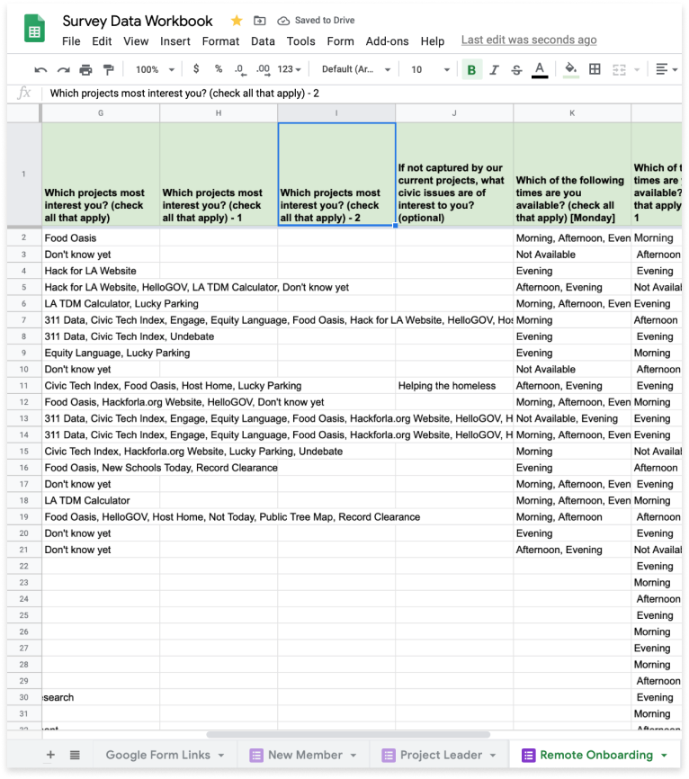
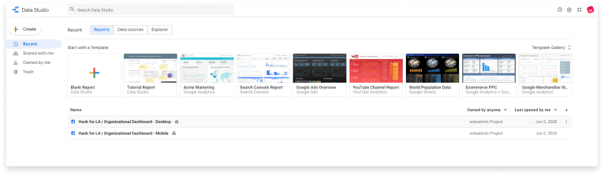
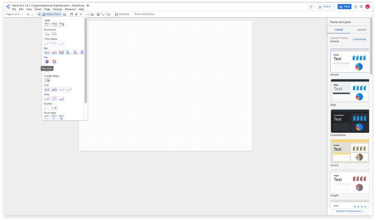
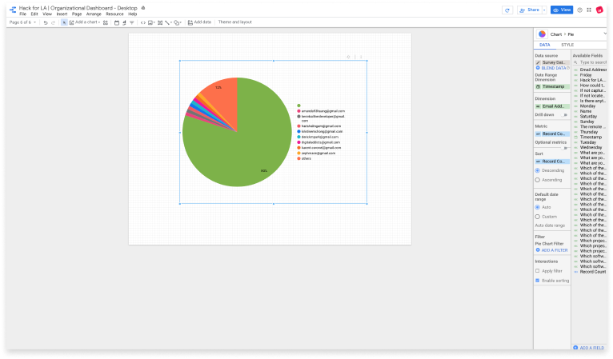

Link Google Form to Google Sheets
Link your survey results to a designated Google Sheets workbook
Select Response Destination
Click the vertical elipsis located at the top right of the survey form
Click the vertical elipsis located at the top right of the survey form
Once you have set the response destination for your Google Form to your desired Google Sheets File, your data will be visible in a new worksheet.
(1) Choose a short, yet descriptive title for your worksheet. If your spreadsheet contains multiple worksheets, move the new tab to the desired location by dragging and dropping using the tab selector.
(2) Format the first row of data. Select the first row, then go to Format -> Text Wrapping -> Wrap.
(3) Select the first row and set the font to bold. Add a background color to further set the column titles off from the rows of data below.


Depending on the way your data is structured within a particular column, you will need to insert columns in order to clean your data for processing.
In most cases, where data is formatted as a list within a cell, this can be accomplished through the insertion of 2 new columns to the right of your target column data.
(1) Select the target column (‘G’). As a shortcut, select the column that immediately precedes as well (‘F’).
(2) In the Go to the Insert menu -> choose ‘2 Columns right.’
Once you have created your new columns to clean your data, title the new columns the same title as your target column with an appendage, such as “- 1” and “- 2”. This will distinguish your new columns from your target column

To create a chart, whether direclty in Google Sheets, or by using a data visualization tool like Google Data Studio, we must have a 1:1 relationship between the data in a particular cell and its dimension (column name). By default, survey questions of the “check all that apply” variety produce data arrays that violate this principle.
We use the TRANSPOSE() function with the SPLIT() and JOIN() functions to achieve this outcome. In our example, we enter the formula =TRANSPOSE((SPLIT(JOIN(“,”, G2:G995), “,”))) in cell H2.
How did we choose G995 as the endpoint of our range? The parameter requires a defined end point; therefore, we arbitrarily choose a cell value beyond which we are certain no future values will be recorded.
Once we have transposed our data, we must remove any leading or trailing spaces found in every string. We can accomplish this by using the TRIM() function coupled with the ARRAYFORMULA() function.
In our example, we enter =ARRAYFORMULA(TRIM(H2:H)) in cell I2. Why do we use “H” as the endpoint of our range? In this case, the TRIM() permits us to use an undefined endpoint.
Once you are logged into Google Data Studio, create a Blank Report, or choose an existing report

Within your report, you have the option of building multiple pages. Use this approach when you wish to break up the number of charts you display per page, or if you choose to organize your data in a specific way.
(1) Click on the Page dropdown at the far left of the menu bar, then click ‘Add a new page’.
(2) Hovering over the new page added within the dropdown menu, you will see a vertical elipsis. Click the vertical elipsis and select Rename. Choose a short, yet descriptive name for your new page.
In order to create charts in Google Data Studio, you will need to connect your report to a data source. Data Studio accomplishes this using Connectors. At the time of this writing, Data Studio offers 16 connectors to tools within the Google ecosystem, along with 204 partner connectors.
A few examples of connectors you may find useful include Google Sheets, Google Analytics, PostgreSQL, Facebook Page, and Twitter Analytics.
(1) Select ‘Add data’ from the menu bar.
(2) Choose your desired Connector from the ‘Connect to data’ window that opens. In our example, we use Google Sheets.
When using Google Sheets, Google Data Studio builds charts at the spreadsheet level.
(1) Select your Spreadsheet, the corresponding Worksheet, and checkmark the desired formatting options.
(2) Click the ‘Add’ button in the bottom right.
Google Data Studio provides numerous ways to visualize data, from tables to bar graphs, pie charts to trendlines, and scatter plots to pivot tables. Choose the chart that will best represent the data you select.
By default, Google Data Studio will arbitrarily choose a Dimension for a newly added chart.

Select the appropriate dimension for your chart. In Google Data Studio, dimension refers to a selected column title in your Worksheet.
(1) Click on the Dimension field. You will see a ‘Default group’ along with a search bar. Type your desired column name in the search bar.
(2) Choose your Dimension. If you have cleaned your data, all column names that share this dimension name will show. Choose the dimension that refers to the farthest right new column that you created, or the one whose title appendage has the highest numerical value.
(3) Choose your Metric. Google Data Studio will often default to ‘Record Count.’ In some cases, this may not be what you want. Once you have chosen your desired metric, appropriately select ‘Count’ or ‘Count Distinct.’ In most cases, you will want to select ‘Count.’ Make this selection by clicking on the ‘CTD’ or ‘CT’ label just to the left of your metric variable.
You may find (more often than not) null values that have been incorporated into your chart. You will need to create a filter to remove them.
(1) Choose ‘ADD A FILTER’ from the properties panel.
(2) Select ‘CREATE A FILTER’ from the ‘Filter picker.’
(3) Copy and paste the name of the column for your cleaned data. In our example this is “Which projects most interest you? (check all that apply) - 2”
(4) From the drop downs, choose ‘Exclude’ and ‘Is Null.’
(5) Select Save.
The graphical components of an added chart can be customized across several different attributes. View the style pane within the properties panel and make your desired selections.
Adding a gradient
If you wish to introduce a gradient to a single color bar graph, you will need to take one additional step in the Data pane.
(1) Select ‘Add Dimension’ under Breakdown Dimension. Select the exact same dimension as you have chosen.
(2) Return to the Style pane. Within the ‘Color by’ section, choose a color that will best represent your data.
Google Forms
Google Sheets
Google Sheets Training and Help
Google Data Studio